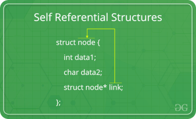
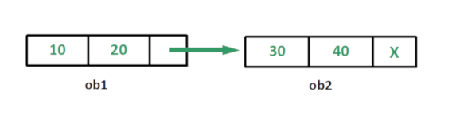

Self Referential Structures
Self Referential structures are those structures that have one or more pointers which point to the same type of structure, as their member.
In other words, structures pointing to the same type of structures are self-referential in nature.
Types of Self Referential Structures
Self Referential Structure with Single Link
Self Referential Structure with Multiple Links
Self Referential Structure with Single Link: These structures can have only one self-pointer as their member. The following example will show us how to connect the objects of a self-referential structure with the single link and access the corresponding data members. The connection formed is shown in the following figure.

#include <stdio.h>
struct node {
int data1;
char data2;
struct node* link;
};
int main()
{
struct node ob1; // Node1
// Intialization
ob1.link = NULL;
ob1.data1 = 10;
ob1.data2 = 20;
struct node ob2; // Node2
// Initialization
ob2.link = NULL;
ob2.data1 = 30;
ob2.data2 = 40;
// Linking ob1 and ob2
ob1.link = &ob2;
// Accessing data members of ob2 using ob1
printf("%d", ob1.link->data1);
printf("\n%d", ob1.link->data2);
return 0;
}
output
30 40
Self Referential Structure with Multiple Links: Self referential structures with multiple links can have more than one self-pointers. Many complicated data structures can be easily constructed using these structures. Such structures can easily connect to more than one nodes at a time. The following example shows one such structure with more than one links.
The connections made in the above example can be understood using the following figure.

#include <stdio.h>>
struct node {
int data;
struct node* prev_link;
struct node* next_link;
};
int main()
{
struct node ob1; // Node1
// Intialization
ob1.prev_link = NULL;
ob1.next_link = NULL;
ob1.data = 10;
struct node ob2; // Node2
// Intialization
ob2.prev_link = NULL;
ob2.next_link = NULL;
ob2.data = 20;
struct node ob3; // Node3
// Intialization
ob3.prev_link = NULL;
ob3.next_link = NULL;
ob3.data = 30;
// Forward links
ob1.next_link = &ob2;
ob2.next_link = &ob3;
// Backward links
ob2.prev_link = &ob1;
ob3.prev_link = &ob2;
// Accessing data of ob1, ob2 and ob3 by ob1
printf("%d\t", ob1.data);
printf("%d\t", ob1.next_link->data);
printf("%d\n", ob1.next_link->next_link->data);
// Accessing data of ob1, ob2 and ob3 by ob2
printf("%d\t", ob2.prev_link->data);
printf("%d\t", ob2.data);
printf("%d\n", ob2.next_link->data);
// Accessing data of ob1, ob2 and ob3 by ob3
printf("%d\t", ob3.prev_link->prev_link->data);
printf("%d\t", ob3.prev_link->data);
printf("%d", ob3.data);
return 0;
}
Output:
10 20 30 10 20 30 10 20 30
In the above example we can see that ‘ob1’, ‘ob2’ and ‘ob3’ are three objects of the self referential structure ‘node’. And they are connected using their links in such a way that any of them can easily access each other’s data. This is the beauty of the self referential structures. The connections can be manipulated according to the requirements of the programmer.
Applications
Self referential structures are very useful in creation of other complex data structures like:
Linked Lists
Stacks
Queues
Trees
Graphs etc